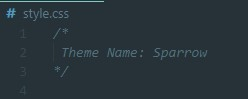
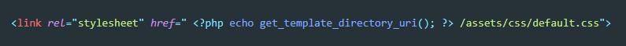

В папке wp-content / themes / создаем папку и называем ее как хотим. Далее в этой папке необходимо создать три файла:
Файл style.css должен содержать вот такой комментарий
Screenshot.png должен иметь размер 1200*900 пикселей. он должен содержать снимок нашей темы
После добавления этих файлов в админке wordpress появится наша тема (пока что пустая)
Если не создавать этот файл то при переходе на несуществующие страницы мы будем попадать на главную страницу
В папке с темой необходимо создать еще два файла, которые будут называться header.php footer.php. В этих файлах будет храниться верстка шапки и подвала сайта
Для того что бы подключать header и footer мы будем использовать вот такое php конструкции:


В папке с темой создаем папку которую называем assets. В эту папку мы должны перенести все файлы с картинками, шрифтами, стилями и скриптами
В строчках в html, где мы подключаем файлы стилей, скриптов и даже картинок, мы можем указать путь до файлов с помощью функции get_template_directory_uri(). Здесь важно отметить что при таком способе подключения файлов нужно не забывать что функция вернет путь до папки с темой. А значит что остальной путь нужно будет указывать от этой папки, т.е. assets / css / и т.д.
Удаляем из header.php все строчки где подключаются стили и в папке с темой создаем файл functions.php (именной functions т.е. множественное число)